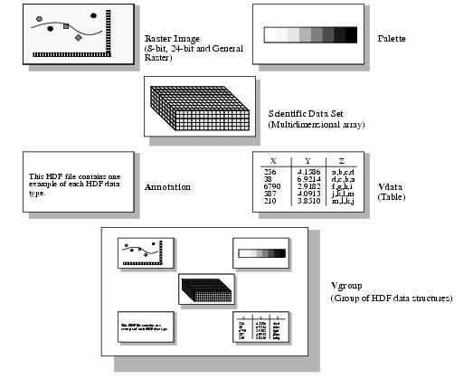
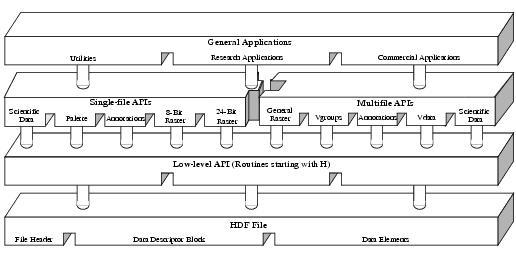

HDF User’s Guide
Version 4.2r4[Top] [Prev][Next]
|
|
HDF User’s GuideVersion 4.2r4 |
[Top] [Prev][Next] |
Chapter 1 -- Introduction to HDF
1.1 Chapter Overview
This chapter provides a general description of HDF including its native object structures, application programming interface, and accompanying command-line utilities. It also provides a short discussion of HDF's original purpose and philosophy, and concludes with a list of the platforms that HDF has been ported to.
1.2 What is HDF?
The Hierarchical Data Format, or HDF, is a multiobject file format for sharing scientific data in a distributed environment. HDF was created at the National Center for Supercomputing Applications, and is now developed and maintained by The HDF Group, to serve the needs of diverse groups of scientists working on projects in various fields. HDF was designed to address many requirements for storing scientific data, including:
In this document, the term HDF data structures will be used to describe the primary constructs HDF provides to store data. These constructs include raster image, palette, scientific data set, annotation, vdata, and vgroup. They are illustrated in Figure 1a on page 2. Note that the construct vgroup is designed for the purpose of grouping HDF data structures.
HDF files are self-describing. The term "self-description" means that, for each HDF data structure in a file, there is comprehensive information about the data and its location in the file. This information is often referred to as metadata. Also, many types of data can be included within an HDF file. For example, it is possible to store symbolic, numerical and graphical data within an HDF file by using appropriate HDF data structures.
FIGURE 1a HDF Data StructuresHDF can be viewed as several interactive levels. At its lowest level, HDF is a physical file format for storing scientific data. At its highest level, HDF is a collection of utilities and applications for manipulating, viewing, and analyzing data stored in HDF files. Between these levels, HDF is a software library that provides high-level and low-level programming interfaces. It also includes supporting software that make it easy to store, retrieve, visualize, analyze, and manage data in HDF files. See Figure 1b on page 3 for an illustration of the interface levels.
The basic interface layer, or the low-level API, is reserved for software developers. It was designed for direct file I/O of data streams, error handling, memory management, and physical storage. It is a software toolkit for experienced HDF programmers who wish to make HDF do something more than what is currently available through the higher-level interfaces. Low-level routines are available only in C.
The HDF application programming interfaces, or APIs, include several independent sets of routines, with each set specifically designed to simplify the process of storing and accessing one type of data. These interfaces are represented in Figure 1b as the second layer from the top. Although each interface requires programming, all the low-level details can be ignored. In most cases, all one must do is make the correct function call at the correct time, and the interface will take care of the rest. Most HDF interface routines are available in both FORTRAN-77 and C. A complete list of the high-level interfaces is provided in Section 1.4 on page 4.
FIGURE 1b Three Levels of Interaction with the HDF FileOn the highest level, general applications, HDF includes various command-line utilities for managing and viewing HDF files, several research applications that support data visualization and analysis, and a variety of third-party applications. The HDF utilities are included in the HDF distribution.
Source code and documentation for the HDF libraries, as well as binaries for supported platforms, is freely available but subject to the restrictions listed with the copyright notice at the beginning of this guide. This material and information regarding a variety of HDF applications is available from The HDF Group at http://www.hdfgroup.org/products/hdf4.
1.3 Why Was HDF Created?
Scientists commonly generate and process data files on several different machines, use various software packages to process files and share data files with others who use different machines and software. Also, they may include different kinds of information within one particular file, or within a group of files, and the mixture of these different kinds of information may vary from one file to another. Files may be conceptually related but physically separated. For example, some data may be dispersed among different files and some in program code. It is also possible that data may be related only in the scientist's conception of the data; no physical relationship may exist.
HDF addresses these problems by providing a general-purpose file structure that:
- Provides the mechanism for programs to obtain information about the data in a file from within the file, rather than from another source.
- Lets the user store mixtures of data from different sources into a single file as well as store the data and its related information in separate files, even when the files are processed by the same application program.
- Standardizes the formats and descriptions of many types of commonly-used data sets, such as raster images and multidimensional arrays.
- Encourages the use of a common data format by all machines and programs that produce files containing specific data.
- Can be adapted to accommodate virtually any kind of data.
1.4 High-Level HDF APIs
HDF APIs are divided into two categories: multifile interfaces (new) and single-file interfaces (old). The multifile interfaces are those that provide simultaneous access to several HDF files from within an application, which is an important feature that the single-file interfaces do not support. It is recommended that the user explore the new interfaces and their features since they are an improvement over the old interfaces. The old interfaces remain simply because of the need for backward compatibility.
The HDF I/O library consists of C and FORTRAN-77 routines for accessing objects and associated information. Although there is some overlap among object types, in most cases an API operates on data of only one type. Therefore, you need only familiarize yourself with the APIs specific to your needs to access data in an HDF file.
The following lists include all of the currently available HDF interfaces and the data that each interface supports.
The new multifile interfaces are:
The old single-file interfaces are:
As these interfaces are the tools used to read and write HDF files, they are the primary focus of this manual.
In every interface, various programming examples are provided to illustrate the use of the interface routines. Both C and FORTRAN-77 versions are available. Their source code, in ASCII format, is located on the FTP servers mentioned in Section 1.2 on page 1 in the subdirectory
samples/.Note that the goal of these examples is to illustrate the use of the interface routines; thus, for simplicity, many assumptions have been made, such as the availability or the authentication of the data. Based on these assumptions, these examples skip the verification of the returned status of each function. In practice, it is strongly recommended that the user verify the returned value of every function to ensure the reliability of the user application.
1.5 HDF Command-Line Utilities and Visualization Tools
HDF application software fall within the following three categories:
- The FORTRAN-77 and C APIs described in Section 1.4 on page 4.
- Scientific visualization and analysis tools that read and write HDF files.
- Command-line utilities that operate directly on HDF files.
Scientific visualization and analysis software that can read and write HDF files is available. This software includes tools such as HDFview, user-developed software, and commercial packages. The use of HDF files guarantees the interoperability of such tools. Some tools operate on raster images, others on color palettes. Some use images, others color palettes, still others data and annotations, and so forth. HDF provides the range of data types that these tools need, in a format that allows different tools with different data requirements to operate on the same files without confusion.
The HDF command-line utilities are application programs that can be executed by entering them at the command prompt, like UNIX commands. They perform common operations on HDF files for which one would otherwise have to write a program. The HDF utilities are described in detail in Chapter 15, HDF Command-line Utilities.
1.6 Primary HDF Platforms
The HDF library and utilities are maintained on a number of different machines and operating systems. For a complete list of the machines, operating systems (with versions), C and FORTRAN-77 compilers (also with versions), refer to http://www.hdfgroup.org/release4/platforms.html.
1.7 HDF4 versus HDF5
Backward compatibility has always been an integral part of the design of HDF Versions 1, 2, 3, and 4 and the HDF4 library can access files from all earlier versions. This manual describes HDF4 and, to the extent appropriate, the earlier versions.
To take advantage of the capabilities of many of the more recent computing platforms and to meet the requirements of science applications that require ever-larger data sets, HDF5 had to be a completely new product, with a new format and a new library. HDF5 is conceptually related to HDF4 but incompatible; it cannot directly read or work with HDF4 files or the HDF4 library. HDF5 software and documentation are available at http://www.hdfgroup.org/products/hdf5.
Both HDF4 and HDF5 are supported by The HDF Group, who will continue to maintain HDF4 as long as funds are available to do so. There are no plans to add any new features to HDF4, but bugs are fixed and the library is regularly built and tested on new operating system versions.
The HDF Group strongly recommends using HDF5, especially if you are a new user and are not constrained by existing applications to using HDF4. We also recommend that you consider migrating existing applications from HDF4 to HDF5 to take advantage of the improved features and performance of HDF5. Informationþ about converting from HDF4 to HDF5 and tools to facilitate that conversion are available at http://www.hdfgroup.org/h4toh5.
See Section 15.19, "Working with Both HDF4 and HDF5 File Formats" on page 463, for further discussions of and links to some of these tools.
|
HDF4.2r4 - February 2009 Copyright |
The HDF Group www.hdfgroup.org |